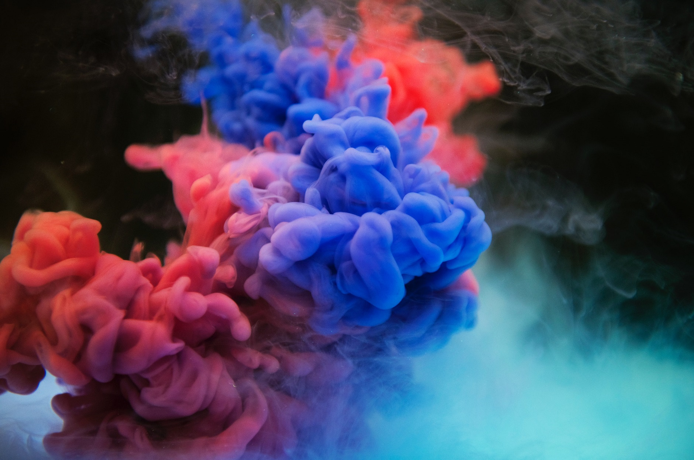
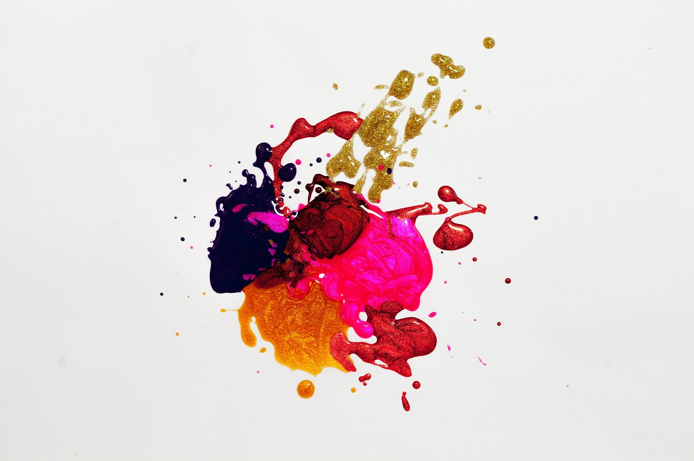

- Freaky Friday: It’s freaky Friday and your contingent has switched its body with the protagonist. Show how the story entails on both the ends.
- Ensure that the endings meet.
Instructions
- Teams per contingent: 2
- Number of participants: 4-6
- Duration: 120 to 180 seconds
- No spoof or foul language
- Video format: MP4/MOV
- Create a montage showing the achievements of a famous personality. (bank)
- A twist followed by a dramatic re-entry on a funny bollywood song.
- Teams per contingent: 1
- Number of participants: 4
- Duration: 2-4 minutes
- Video format: MP4/MOV
- High end brands advertising weird products. (bank)
- Iconic bollywood villains would be the brand ambassadors. (bank)
- The ad campaign must include: 1. TVC | 2. Print Ads
- Teams per contingent: 2
- Number of participants: 4-5
- Duration: 30 - 45 seconds
- Video format : MP4/MOV

- Create a movie poster with the villain in the limelight.
- By using Geometric shapes, submit a 2D animated figure of your villain
- The contingents have to design: 1. Poster | 2. 2D Animated Figure
- Teams per contingent: 1
- Number of participants: 2 per team
- Dimensions for Poster: 11 x 17 inches

- Write a story which should include the elements of Magic and realism.
- Teams per contingent: 1
- Number of participants: 1
- Duration: 2 hours
- Word limit : 500-700 words
- Murder/Crime scene of the dead character.
- The screenplay should be written with the perspective of your Villain’s best friend.
- A mystery box will be given to the participant after 1 hour of the event. The screenplay should include the contents of the mystery box.
- Teams per contingent: 1
- Number of participants: 1
- Duration: 2 hours
- Screenplay format will be provided in the CD
- No foul or spoof language

- Round 1 : Instead of radio jockeys, you’ll be radio journalists. The twist being that you have to give a comic take on a superstition and provide news with this twist.
- Round 2 : What if your contingent was an RJ? How would they perform as radio jockeys? Participants must have a similar tone of voice/dialogue delivery as their contingent.
- Teams per contingent: 1
- Number of participants: 2
- Duration of Round 1: 1-3 mins
- Duration of Round 2: 2-3 mins

- Participants have to paint on a 1×1 meter cotton cloth with Fabric paints. And the participants must include elements of their contingent/the universe that they belong to.
- Teams per contingent: 1
- Number of participants: 2
- Duration: 2 hours
- Contingents must carry their art material
- Social Issue to be shown.
- Photograph should be divided into two halves.
- 1st half: Black and White
- 2nd half: Colourful.
- Teams per contingent: 2
- Number of participants per team: 1
- No photoshop allowed
- Format to be submitted: Raw along with minimally edited picture.
- Competitive ads – Use competitive ad form in your silent TVC.
- Use of only ambient sounds and background music is allowed, dialogues cannot be used.
- Teams per contingent: 2
- Number of participants: 4
- Duration: 45-60 seconds
- Duration of trailer: 30 - 45 seconds
- Video format : MP4/MOV